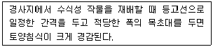
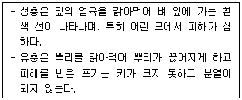
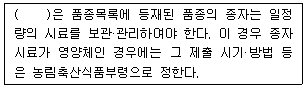
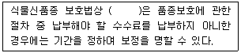
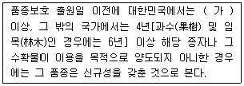
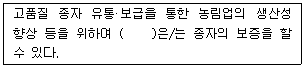
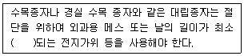
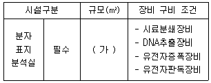
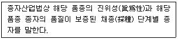

종자기사 (2020-09-26 기출문제)
1과목: 종자생산학
1. 다음 중 무배유형 종자를 형성하는 것으로만 나열된 것은?
- 오이, 완두
- 밀, 양파
- 토마토, 벼
- 보리, 당근
(정답률: 88%)

2. 자가불화합성을 타파하는 방법이 아닌 것은?
- 뇌수분
- 개화수분
- 인공수분
- CO2처리
(정답률: 72%)
3. 다음 중 형태적 결함에 의한 불임성의 원인으로 가장 거리가 먼 것은?
- 이형예현상
- 뇌수분
- 자웅이숙
- 장벽수정
(정답률: 78%)
4. 다음 중 무한화서가 아닌 것은?
- 두상화서
- 총상화서
- 산형화서
- 단집산화서
(정답률: 71%)
5. 다음 중 단일식물로만 나열된 것은?
- 시금치, 상추
- 감자, 아마
- 국화, 담배
- 양파, 양귀비
(정답률: 72%)
6. 원종 채종 시 뇌수분을 이용하는 작물로만 나열된 것은?
- 양배추, 무
- 밀, 당근
- 고구마, 벼
- 오이, 보리
(정답률: 84%)
7. 최아한 종자를 점성이 있는 액상의 젤과 혼합하여 기계로 파종하는 방법은?
- 고체프라이밍파종
- 액체프라이밍파종
- 액상파종
- 드럼프라이밍파종
(정답률: 63%)
8. 다음 중 여교배 조합이 가장 바르게 표시된 것은?
- (A×B)×(A×B)
- (A×B)×(A×C)
- {A×(A×B)}×C
- {A×(A×B)}×A
(정답률: 71%)
9. 다음 중 덩이줄기를 이용하여 번식하는 것은?
- 감자
- 거베라
- 고구마
- 마
(정답률: 84%)
10. 꽃가루가 암술머리에 떨어지는 현상은?
- 수정
- 교배
- 수분
- 교잡
(정답률: 86%)
11. 침윤종자나 생장 중인 식물에 저온을 처리함으로써 개화를 유도하는 것은?
- 춘화처리
- 광처리
- 휴면처리
- 환상박피
(정답률: 91%)
12. 종자검사의 주요 내용이 아닌 것은?
- 발아검사
- 순도검사
- 병해검사
- 단백질 함량검사
(정답률: 81%)
13. 종자의 발아과정을 바르게 나열한 것은?
- 저장양분 분해 → 수분 흡수 → 과피의 파열 → 배의 생장 개시
- 수분 흡수 → 저장양분 분해 → 과피의 파열 → 배의 생장 개시
- 수분 흡수 → 저장양분 분해 → 배의 생장 개시 → 과피의 파열
- 저장양분 분해 → 과피의 파열 → 수분 흡수 → 배의 생장 개시
(정답률: 73%)
14. 다음 중 영양번식과 가장 관련이 있는 것은?
- 유성생식
- 무성생식
- 감수분열
- 타가수정
(정답률: 77%)
15. 종자전염성병의 검정법 중 혈청학적 검정법에 속하는 것은?
- 면역이중확산법
- 여과지배양검정법
- 유묘병징조사법
- 한천배지검정법
(정답률: 64%)
16. 다음 중 자연적으로 씨없는 과실이 형성되는 작물로 가장 거리가 먼 것은?
- 바나나
- 수박
- 감귤류
- 포도
(정답률: 88%)
17. 다음 중 발아 시 광을 필요로 하는 종자로만 나열된 것은?
- 벼, 파
- 샐러리, 상추
- 호박, 오이
- 토마토, 양파
(정답률: 84%)
18. 속씨식물의 중복수정에서 2개의 극핵과 1개의 웅핵이 수정되어 생성되는 것은?
- 배유
- 종피
- 배
- 자엽
(정답률: 83%)
19. 채소류 종자 중 5년 이상의 장명종자로만 나열된 것은?
- 땅콩, 사탕무
- 비트, 토마토
- 옥수수, 강낭콩
- 상추, 고추
(정답률: 71%)
20. 배낭모세포가 감수분열을 못하거나 비정상적인 분열을 하여 배를 형성하는 것은?
- 복상포자생식
- 무성생식
- 영양번식
- 유사분열
(정답률: 69%)
2과목: 식물육종학
21. 다음 중 유전적 변이를 감별하는 방법으로 가장 알맞은 것은?
- 유의성 검정
- 후대검정
- 전체형성능(totipotency) 검정
- 질소 이용률 검정
(정답률: 84%)
22. 다음 중 트리티케일(Triticale)의 기원은?
- 밀 × 호밀
- 밀 × 보리
- 호밀 × 보리
- 보리 × 귀리
(정답률: 80%)
23. 다음 중 감수분열 제1전기의 진행 순서가 바르게 나열된 것은?
- 세사기 → 이동기 → 대합기 → 태사기
- 이동기 → 세사기 → 태사기 → 대합기
- 세사기 → 대합기 → 태사기 → 이동기
- 세사기 → 이동기 → 태사기 → 대합기
(정답률: 77%)
24. 품종의 생리적 퇴화의 원인이 되는 것은?
- 돌연변이
- 자연교잡
- 토양적인 퇴화
- 이형 유전자형의 분리
(정답률: 60%)
25. 단위생식(Apomixis)을 가장 옳게 표현한 것은?
- 씨 없는 수박은 이 원리를 이용한 것이다.
- 수분이 되지 않았는데 과실이 비대하는 현상이다.
- 근친교배에서 많이 일어나는 일종의 퇴화현상이다.
- 수정이 되지 않고도 종자가 생기는 현상이다.
(정답률: 76%)
26. 이질 배수체를 작성하는 방법으로 가장 알맞은 것은?
- 특정한 게놈을 가진 품종의 식물체에 콜히친을 처리한다.
- 서로 다른 게놈을 가진 식물체끼리 교잡을 시킨 후 그 잡종에 콜히친 처리를 한다.
- 동일한 게놈을 가진 품종끼리 교잡을 시킨 후 그 잡종에 콜히친 처리를 한다.
- 인위적으로는 만들 수 없고 자연계에서 만들어지기를 기다린다.
(정답률: 78%)
27. 다음 중 계통분리법에 해당하지 않는 육종법은?
- 집단육종법
- 성군집단선발법
- 모계선발법
- 가계선발법
(정답률: 73%)
28. 벼와 같은 자식성 식물에서 잡종강세에 대한 설명으로 옳은 것은?
- 자식성 식물이므로 잡종 강세가 일어나지 않는다.
- 교배조합에 따라 잡종강세가 일어날 수 있다.
- 모든 교배조합에서 잡종강세가 크게 나타난다.
- 자식성 식물에서는 잡종강세를 조사하지 않는다.
(정답률: 82%)
29. 감자 등과 같은 영양번식성 작물이 바이러스병에 의해 퇴화되는 것을 방지하는 방법으로 가장 옳은 것은?
- 추파성 소거
- 고랭지 채종
- 조기재배
- 기계적 혼입 방비
(정답률: 80%)
30. 타식성 식물에 대한 설명으로 옳은 것은?
- 유전자형이 동형접합(homozygosity)이다.
- 단성화와 자가불임의 양성화뿐이다.
- 자연계에서 서로 다른 개체 간 수정되는 비율이 높은 식물이다.
- 자웅이숙 식물만이 순수한 타식성 식물이다.
(정답률: 85%)
31. 완전히 자가수정하는 동형접합체의 1개체로부터 불어난 자손의 총칭은?
- 유전자원
- 유전변이체
- 순계
- 동질배수체
(정답률: 80%)
32. 다음 중 반수체육종의 가장 큰 장점은?
- 이형집단 발생이 쉬우며 다양한 형질을 가지고 있다.
- 돌연변이가 많이 나온다.
- 유전자 재조합이 많이 일어난다.
- 육종연한을 단축한다.
(정답률: 79%)
33. 웅성불임성의 발현에 해당하는 것은?
- 무배생식
- 위수정
- 수술의 발생억제
- 배낭모세포의 감수분열 이상
(정답률: 69%)
34. 콩과 식물의 제웅에 가장 적당한 방법은?
- 화판인발법(花瓣引拔法)
- 집단제정법(集團際精法)
- 절영법(切潁法)
- 수세법(水洗法)
(정답률: 78%)
35. 상위성이 있는 경우 양성잡종 F2 분리비가 15:1인 것은?
- 보족유전자
- 중복유전자
- 억제유전자
- 피복유전자
(정답률: 65%)
36. 교배모본 선정 시 고려해야 할 사항이 아닌 것은?
- 유전자원의 평가 성적을 검토한다.
- 유전분석 결과를 활용한다.
- 교배친으로 사용한 실적을 참고한다.
- 목적형질 이외에 양친의 유전적 조성의 차이를 크게 한다.
(정답률: 81%)
37. 육종과정에서 새로운 변이의 창성방법으로서 쓰일 수 없는 것은?
- 인위 돌연변이
- 인공교배
- 배수체
- 단위결과
(정답률: 78%)
38. 자연일장이 13시간 이하로 되는 늦여름 야간 자정부터 1시까지 1시간 동안 충분한 광선을 식물체에 일정 기간 동안 조명해 주었을 때 나타나는 현상은?
- 코스모스 같은 단일성 식물의 개화가 현저히 촉진되었다.
- 가을 배추가 꽃을 피웠다.
- 가을 국화의 꽃봉오리가 제대로 생기지 않았다.
- 조생종 벼가 늦게 여물었다.
(정답률: 80%)
39. 잡종강세를 이용하는 데 구비해야 할 조건으로 옳지 않은 것은?
- 한 번의 교잡으로 많은 종자를 생산할 수 있어야 한다.
- 교잡조작이 쉬워야 한다.
- 단위 면적당 재배에 요구되는 종자량이 많아야 한다.
- F1종자를 생산하는 데 필요한 노임을 보상하고도 남음이 있어야 한다.
(정답률: 77%)
40. 종자번식 농작물의 일생을 순서대로 나타낸 것은?
- 배우자형성 → 결실 → 중복수정 → 영양생장 → 발아
- 영양생장 → 결실 → 발아 → 중복수정 → 배우자형성
- 발아 → 중복수정 → 배우자형성 → 결실 → 영양생장
- 발아 → 영양생장 → 배우자형성 → 중복수정 → 결실
(정답률: 80%)
3과목: 재배원론
41. 다음 중 3년생 가지에 결실하는 것은?
- 포도
- 밤
- 감
- 사과
(정답률: 74%)
42. 세포의 팽압을 유지하며, 다량원소에 해당하는 것은?
- Mo
- K
- Cu
- Zn
(정답률: 82%)
43. 다음 중 묘대일수 감응도가 낮으면서 만식 적응성이 큰 기상 생태형은?
- Bit형
- bLt형
- bIT형
- blt형
(정답률: 63%)
44. 다음 중 내염성 정도가 가장 큰 작물은?
- 고구마
- 가지
- 레몬
- 유채
(정답률: 75%)
45. 다음 중 적산온도가 가장 낮은 것은?
- 메밀
- 벼
- 담배
- 조
(정답률: 78%)
46. 다음 중 작물별 안전저장 조건에서 온도가 가장 높은 것은?
- 식용감자
- 과실
- 쌀
- 엽채류
(정답률: 73%)
47. 다음 중 산성토양에 가장 강한 작물은?
- 상추
- 완두
- 고추
- 수박
(정답률: 49%)
48. 다음 중 장일식물은?
- 들깨
- 담배
- 국화
- 감자
(정답률: 56%)
49. 포장을 수평으로 구획하고 관개하는 방법은?
- 다공관관개법
- 수반법
- 스프링클러관개법
- 물방울관개법
(정답률: 71%)
50. 지력을 토대로 자연의 물질순환 원리에 따르는 농업은?
- 생태농업
- 정밀농업
- 자연농업
- 무농약농업
(정답률: 72%)
51. 가지를 수평 또는 그보다 더 아래로 휘어 가지의 생장을 억제하고 정부우세성을 이동시켜 기부에서 가지가 발생하도록 하는 것은?
- 절상
- 적엽
- 제얼
- 휘기
(정답률: 78%)
52. 다음에서 설명하는 것은?

- 등고선 경작 재배
- 초생재배
- 단구식 재배
- 대상재배
(정답률: 44%)
53. 다음 중 작물에 따른 재배에 적합한 토성의 범위가 가장 큰 작물은?
- 콩
- 아마
- 담배
- 피
(정답률: 68%)
54. 굴광현상에 가장 유효한 광은?
- 자외선
- 자색광
- 청색광
- 녹색광
(정답률: 75%)
55. 내건성 작물의 특성에 해당되는 것은?
- 잎이 크다.
- 건조 시에 당분의 소실이 빠르다.
- 건조 시에 단백질의 소실이 빠르다.
- 세포액의 삼투압이 높다.
(정답률: 79%)
56. 다음 중 내습성이 가장 큰 것은?
- 파
- 양파
- 옥수수
- 당근
(정답률: 62%)
57. 다음 중 장과류에 해당하는 것으로만 나열된 것은?
- 포도, 딸기
- 감, 귤
- 배, 사과
- 비파, 자두
(정답률: 72%)
58. 삽수의 발근촉진에 주로 이용되는 생장조절제는?
- Ethylene
- ABA
- IBA
- BA
(정답률: 50%)
59. 박과 채소류 접목의 특징으로 틀린 것은?
- 저온에 대한 내성이 증대된다.
- 과습에 잘 견딘다.
- 기형과 발생을 억제한다.
- 흡비력이 강해진다.
(정답률: 62%)
60. 다음 중 과실 성숙과 가장 관련이 있는 것은?
- Ethylene
- ABA
- BA
- IAA
(정답률: 77%)
4과목: 식물보호학
61. 잡초로 인한 피해가 아닌 것은?
- 방제 비용 증대
- 작물의 수확량 감소
- 경지의 이용 효율 감소
- 철새 등 조류에 의한 피해 증가
(정답률: 87%)
62. 다음 중 무시류에 속하는 곤충목은?
- 파리목
- 돌좀목
- 사마귀목
- 집게벌레목
(정답률: 63%)
63. 살비제의 구비 조건이 아닌 것은?
- 잔효력이 있을 것
- 적용 범위가 넓을 것
- 약제 저항성의 발달이 지연되거나 안 될 것
- 성충과 유충(약충)에 대해서만 효과가 있을 것
(정답률: 69%)
64. 식물바이러스병의 외부병징으로 가장 거리가 먼 것은?
- 변색
- 위축
- 괴사
- 무름증상
(정답률: 63%)
65. 복숭아심식나방에 대한 설명으로 옳지 않은 것은?
- 일반적으로 연 2회 발생한다.
- 유충으로 나무껍질 속에서 겨울을 보낸다.
- 부화유충은 과실 내부에 침입하여 식해한다.
- 방제를 위해 과실에 봉지를 씌우면 효과적이다.
(정답률: 61%)
66. 상처가 아물도록 처리하여 저장할 경우 방제 효과가 가장 큰 병은?
- 사과 탄저병
- 고추 탄저병
- 사과 겹무늬썩음병
- 고구마 검은무늬병
(정답률: 77%)
67. 다음 설명에 해당하는 해충은?

- 벼밤나방
- 벼혹나방
- 벼물바구미
- 끝동매미충
(정답률: 74%)
68. 다음 중 토양 속에서 활동하며 주로 식물체의 뿌리는 침해하여 혹을 만들거나 토양전염성 병원체와 협력하여 식물병을 일으키는 것은?
- 지렁이
- 멸구
- 선충
- 거미
(정답률: 74%)
69. 세균성 무름증상에 대한 설명으로 옳지 않은 것은?
- Pseudononas 속은 무름증상을 일으키지 않는다.
- Erwinia속은 무름병의 진전이 빠르고 악취가 난다.
- 수분이 적은 조직에서는 부패현상이 나타나지 않는다.
- 병원균은 펙틴분해효소를 생산하여 세포벽 내의 펙틴을 분해한다.
(정답률: 66%)
70. 각종 피해 원인에 대한 작물의 피해를 직접피해, 간접피해 및 후속피해로 분류할 때 간접적인 피해에 해당하는 것은?
- 수확물의 질적 저하
- 수확물의 양적 감소
- 수확물 분류, 건조 및 가공비용 증가
- 2차적 병원체에 대한 식물의 감수성 증가
(정답률: 71%)
71. 어떤 곤충이 종류가 다른 곤충을 잡아먹는 식성을 무엇이라고 하는가?
- 부식성
- 포식성
- 기생성
- 균식성
(정답률: 87%)
72. 제초제의 살초 기작과 관계가 없는 것은?
- 생장 억제
- 광합성 억제
- 신경작용 억제
- 대사작용 억제
(정답률: 67%)
73. 해충종합관리(IPM)에 대한 설명으로 옳은 것은?
- 농약의 항공방제를 말한다.
- 여러 방제법을 조합하여 적용한다.
- 한 가지 방법으로 집중적으로 방제한다.
- 한 지역에서 동시에 방제하는 것을 뜻한다.
(정답률: 83%)
74. 밀 줄기녹병균의 제1차 전염원이 되는 포자는?
- 소생자
- 겨울포자
- 여름포자
- 녹병정자
(정답률: 70%)
75. 분제에 있어서 주성분의 농도를 낮추기 위하여 쓰이는 보조제는?
- 전착제
- 감소제
- 협력제
- 증량제
(정답률: 74%)
76. 잡초의 생태적 방제방법 중 경합특성 이용법에 해당되지 않은 것은?
- 관배수 조절
- 재식밀도 조절
- 육묘이식 재배
- 품종 및 종자 선정
(정답률: 63%)
77. 주로 과실을 가해하는 해충이 아닌 것은?
- 복숭아순나방
- 복숭아명나방
- 복숭아심식나방
- 복숭아유리나방
(정답률: 71%)
78. 식물병 진단 방법에 대한 설명으로 옳지 않은 것은?
- 충체 내 주사법은 주로 세균병 진단에 사용 된다.
- 지표식물을 이용하여 일부 TMV를 진단할 수 있다.
- 파지(phage)에 의한 일부 세균병 진단이 가능하다.
- 혈청학적인 방법은 바이러스병 진단에 효과적이다.
(정답률: 60%)
79. 잡초의 밀도가 증가하면 작물의 수량이 감소되는데, 어느 밀도 이상으로 잡초가 존재하면 작물 수량이 현저하게 감소되는 수준까지의 밀도는?
- 잡초밀도
- 잡초경제한계밀도
- 잡초허용한계밀도
- 작물수량감소밀도
(정답률: 77%)
80. 살충제 Bt제의 작용점은?
- 소뇌
- 중장세포
- 호르몬샘
- 키틴합성회로
(정답률: 60%)
5과목: 종자관련법규
81. 종자의 수출·수입 및 유통 제한에 관한 사항을 위반하여 종자를 수출 또는 수입하거나 수입된 종자를 유통시킨 자의 벌칙은?
- 5년 이하의 징역 또는 1억원 이하의 벌금
- 3년 이하의 징역 또는 3천만원 이하의 벌금
- 2년 이하의 징역 또는 5백만원 이하의 벌금
- 1년 이하의 징역 또는 1천만원 이하의 벌금
(정답률: 63%)
82. 식물신품종 보호법상 재심 및 소송에서 “심결에 대한 소와 심판청구서 또는 재심청구서의 보정각하결정에 대한 소는 특허법원의 전속관할로 한다.”에 따른 소는 심결이나 결정의 등본을 송달받은 날부터 며칠 이내에 제기하여야 하는가?
- 14일
- 21일
- 30일
- 60일
(정답률: 58%)
83. 종자산업법상 품종목록 등재의 유효기간은 등재한 날이 속한 해의 다음 해부터 몇 년까지로 하는가?
- 3년
- 5년
- 10년
- 15년
(정답률: 75%)
84. ( )에 알맞은 내용은?

- 농림축산식품부장관
- 농촌진흥청장
- 국립종자원장
- 농업기술센터장
(정답률: 63%)
85. 종자관리요강상 규격묘의 규격기준에서 배잎눈 개수는?
- 접목부위에서 상단 30cm 사이에 잎눈 3개 이상
- 접목부위에서 상단 30cm 사이에 잎눈 5개 이상
- 접목부위에서 상단 10cm 사이에 잎눈 3개 이상
- 접목부위에서 상단 10cm 사이에 잎눈 10개 이상
(정답률: 65%)
86. 종자검사요령상 포장검사 병주 판정기준에서 팥, 녹두의 특정병은?
- 엽소병
- 갈반병
- 콩세균병
- 흰가루병
(정답률: 65%)
87. 종자관리요강상 수입적응성시험의 대상작물 및 실시기관에서 톨페스큐의 실시기관은?
- 한국생약협회
- 한국종자협회
- 농업협동조합중앙회
- 농업기술실용화재단
(정답률: 48%)
88. 과수와 임목의 경우 품종보호권의 존속기간은 품종보호권이 설정등록된 날부터 몇 년으로 하는가?
- 25년
- 15년
- 10년
- 5년
(정답률: 80%)
89. 종자관리요강상 포장검사 및 종자검사의 검사기준에서 과수의 포장격리는 무병 묘목인지 확인되지 않은 과수와 최소 몇 m 이상 격리되어 근계의 접촉이 없어야 하는가?
- 5m
- 10m
- 20m
- 25m
(정답률: 50%)
90. 종자검사요령상 종자 건전도 검정에서 벼키다리병의 검사시료는?
- 104립
- 200립
- 300립
- 700립
(정답률: 58%)
91. 식물신품종 보호법상 품종보호권의 설정등록을 받으려는 자나 품종보호권자는 품종보호료 납부기간이 지난 후에도 몇 개월 이내에는 품종보호료를 납부할 수 있는가?
- 6개월
- 7개월
- 9개월
- 12개월
(정답률: 77%)
92. ( )에 옳지 않은 내용은?

- 농림축산식품부장관
- 농촌진흥청장
- 해양수산부장관
- 심판위원회 위원장
(정답률: 38%)
93. 종자검사요령상 시료추출에서 호박의 순도검사를 위한 시료의 최소 중량은?
- 180g
- 200g
- 250g
- 300g
(정답률: 49%)
94. 식물신품종 보호법상 신규성에 대한 내용이다. ( 가 )에 알맞은 내용은?

- 1년
- 2년
- 3년
- 10년
(정답률: 69%)
95. ( )에 알맞은 내용은?

- 환경부장관
- 종자관리사
- 농촌진흥청장
- 농산물품질관리원장
(정답률: 76%)
96. 종자검사요령상 수분의 측정에 필요한 절단 기구에 대한 설명이다. ( )에 알맞은 내용은?

- 2cm
- 3cm
- 4cm
- 7cm
(정답률: 59%)
97. 종자관리요강상 종자산업진흥센터 시설기준에 대한 내용이다. ( 가 )에 알맞은 내용은?

- 60 이상
- 50 이상
- 30 이상
- 25 이상
(정답률: 59%)
98. 품종보호권의 설정등록을 받으려는 자 또는 품종보호권자가 책임질 수 없는 사유로 추가납부기간 이내에 품종보호료를 납부하지 아니하였거나 보전기간 이내에 보전하지 아니한 경우에는 그 사유가 종료한 날부터 며칠 이내에 그 품종보호료를 납부하거나 보전할 수 있는가? (단, 추가납부기간의 만료일 또는 보전기간의 만료일 중 늦은 날부터 6개월이 지났을 경우는 제외한다.)
- 5일
- 7일
- 10일
- 14일
(정답률: 70%)
99. 다음에서 설명하는 것은?

- 포엽종자
- 묘종자
- 미수종자
- 보증종자
(정답률: 85%)
100. 종자산업법상 농림축산식품부장관은 진흥센터가 진흥센터 지정기준에 적합하지 아니하게 된 경우에는 대통령령으로 정하는 바에 따라 그 지정을 취소하거나 몇 개월 이내의 기간을 정하여 업무의 정지를 명할 수 있는가?
- 12개월
- 7개월
- 6개월
- 3개월
(정답률: 40%)